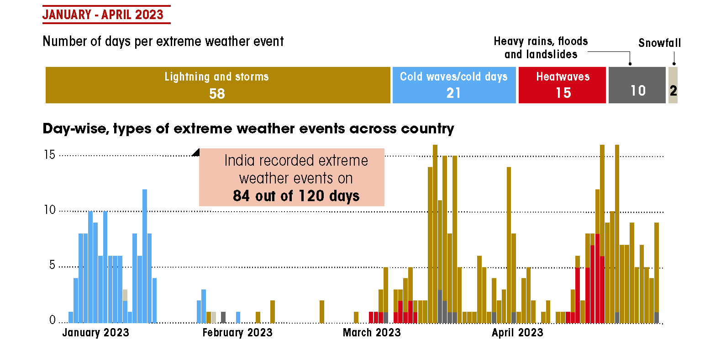
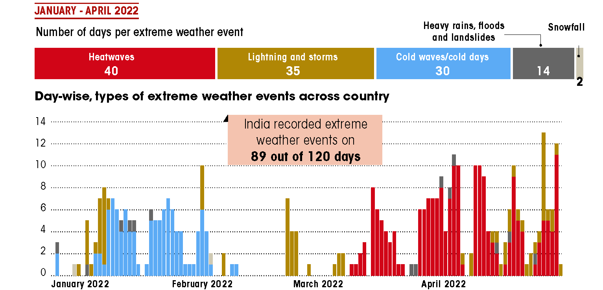

We have cooked ourselves a storm
By Rajit Sengupta
In the first four months of 2022, heatwaves were the most frequent extreme weather event. A year later, hailstorms— which the India Meteorological Department classifies as lightning and storms—took over as the most frequent extreme weather event. In fact, of the 84 days with extreme weather events in 2023, hailstorms were reported on 58 days. They caused devastation in 33 states/UTs during the first four months of 2023
For the past two days, i.e 9th and 10th July 2023, India has been experiencing heavier-than-usual rainfall. The schools and offices were closed down due to the rains and news is filled with reports of rivers overflowing. The Beas river in the state of Himachal Pradesh has washed away three bridges. My work with the Centre for Science and Environment data centre has made me aware of the silent increase in the proliferation of extreme weather events around us.
 
The current project was born out of my work tracking extreme weather events across my country, India. The project compares the occurrence of extreme weather events in the first 120 days of last year, i.e, 2022 and this year, 2023. This year, the 33 Indian states and Union territories of India experienced extreme weather events of one sort or another on 84, out of the 120 days I have mapped.
This is almost the same as the number from last year (2022) when the number of such days totalled 89. For this analysis I have taken the data from the annual publication State of India’s Environment in figures 2023 which is published by the organization I am associated with, the Centre for Science and Environment (CSE) and its flagship magazine Down to Earth.
This is a project that has been central to my work as a journalist and one that I believe in implicitly. 70 percent of the days in the first four weeks of the last year experienced extreme weather anomalies.
The difference in the two year is striking as during the first four months of 2022, the most common kind of extreme weather events were heatwaves while in 2023, it was hailstorms. Of the 84 days with extreme weather events in 2023, hailstorms were reported on 58 days.
Whether it is untimely/extreme heatwaves or untimely/extreme hailstorms, the reasons fo the same can be traced back to global warming, weak western disturbances and a string subtropical jet stream.
Loss and damage
We lost 233 lives between January and April 2023, due to extreme weather events, in comparison to 86 human lives during the same period in 2022 which is a staggering 170 per cent increase.

Even if we see the material loss that has resulted from the weather anomalies, it is revealed that extreme weather events damaged at least 0.95 million hectares (mha) of cropland between January and April 2023. In 2022, this number was sizeably small at 0.03 mha of cropland affected in 2022. The increase is devastating at 31 times or over 3,000 per cent.
These estimates on loss and damage are based on media reports that cited state and national-level estimates and the information made available by IMD in the public domain.
Another direct result of the extreme weather events is on the crops and their availability for the masses. Many state governments like that of the largest Indian state of Uttar Pradesh acknowledged the loss that was accrued from the crash crop of the region, wheat. These damages require monetary assistance and then lead to economic distress for the people as well as the governments.
India has witnessed an unusually high number of western disturbances (WDs) in the last three months. According to IMD, there were eight WDs in May 2023, which is extremely high for the summer months. This has resulted in large-scale thunderstorms, excessive rainfall, hailstorms, and squalls.
What it means
It is important for us to understand through data aggregation and competent and large-scale analysis, the true impact of these extreme weather events so that rescue and restoration activities can be carried out effectively. These weather anomalies also provide concrete proof of the ways in which climate change and global warming are dangerously affecting our daily life-patterns.
Raw data sourced from INDIA’S ATLAS ON WEATHER DISASTERS